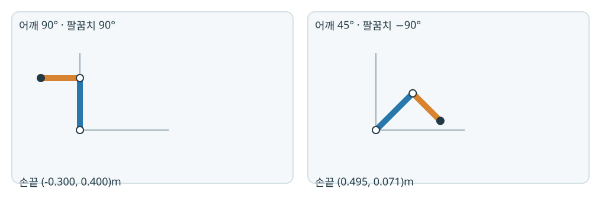

앞의 세 페이지에서 규칙을 세웠으니, 이제 조건을 하나씩 바꿔 그 규칙이 버티는지 봅니다. 순서는 늘 같습니다. 함께 계산한 예를 따라 쓰고, 조건을 하나 바꿔 계산한 뒤, 코드로 대조합니다. 계산과 출력이 다르면 각도의 기준이나 단위를 찾아보면 됩니다.
바꿔 보기: 각도, 링크 길이, 관절 수

실습 1 · 각도를 바꾸면 — 함께 계산합니다
같은 0.4m·0.3m 팔에서 [90, 90]을 넣어 봅니다. 어깨를 90° 돌렸으니 위팔은 위로 서고 팔꿈치는 (0, 0.4)입니다. 아래팔의 바닥 기준 방향은 90+90=180°이므로 왼쪽을 봅니다. 화살표는 (−0.3, 0). 더하면 손끝은 (−0.3, 0.4)m입니다.
여기서 흔한 실수는 팔꿈치 90°를 “아래팔이 위를 본다”로 읽는 것입니다. 그 90°는 이미 90° 서 있는 위팔에서 잰 상대각이므로, 바닥 기준으로는 180°가 됩니다. 이 자세의 어깨–손끝 거리는 √(0.09+0.16)=0.5m로, 팔꿈치를 90° 굽힌 [0,90]과 같은 값입니다. 8쪽의 거리 식에 q2=90°를 넣으면 어깨각과 무관하게 0.5가 나옵니다.
부호가 있는 각도도 같은 방식입니다. [45, −90]이면 팔꿈치는 (0.4cos45°, 0.4sin45°)=(0.283, 0.283)이고, 아래팔 방향은 45−90=−45°입니다.
화살표는 0.3(cos(−45°), sin(−45°))=(0.212, −0.212). 손끝은 (0.495, 0.071)m이고 거리는 다시 0.5m입니다. 굽힌 방향이 반대라 손끝이 아래쪽으로 내려갔을 뿐, 거리는 같은 원리로 정해집니다. 팔꿈치각 −90°를 아래팔의 절대 방향으로 넣지 마세요.
실습 2 · 링크 길이를 바꾸면
이번에는 각도가 아니라 로봇을 바꿉니다. 위팔과 아래팔을 0.35m, 0.35m로 같게 만들면 작업 공간이 어떻게 변할까요? 8쪽에서 쓴 두 조건을 그대로 적용해 보세요. 하나는 펼쳤을 때의 최대 반경, 다른 하나는 완전히 접었을 때의 최소 반경입니다. 그리고 팔꿈치 ±150° 제한을 켠 경우도 따로 계산해야 합니다.
실습 2의 계산과 답
회전 제한이 없다면 최소 반경은 |0.35−0.35|=0입니다. 원점까지 닿으므로 고리 가운데 구멍이 사라지고 원판이 됩니다. 최대 반경은 여전히 0.35+0.35=0.7m입니다.
그러나 같은 예제의 팔꿈치 ±150° 제한을 유지한 영역은 다릅니다. 완전히 접을 수 없으므로 8쪽의 식에 q2=150°를 넣습니다. r=√(0.35²+0.35²+2×0.35×0.35×cos150°)=√0.032829≈0.1812m입니다. 2×0.35×cos75°로 계산해도 같습니다. 제한 없는 그림과 제한 있는 그림을 구분하지 않으면 “원점까지 닿는다”는 결론이 틀립니다.
길이가 같은 팔에서 완전히 접힌 자세는 손끝이 원점에 겹치는 특이한 자세이기도 합니다. 그 점 하나가 닿는다고 그 주변까지 자유롭게 움직일 수 있다는 뜻은 아닙니다.
실습 3 · 관절 수를 바꾸면
이번에는 6관절 팔의 각도를 [0, 90, 0, 0, 0, 0]°로 바꿉니다. 허리는 그대로, 어깨만 90°입니다. 무엇이 그대로이고 무엇이 눕는지 먼저 적어 보세요. 9쪽의 간격 표와 10쪽의 방향 읽기를 그대로 쓰면 됩니다.
실습 3의 계산과 답
어깨까지의 높이 0.10+0.10=0.2m는 그대로입니다. 어깨 아래에 달린 0.30+0.25+0.05+0.05+0.05=0.70m가 어깨의 y축 회전 90° 때문에 z방향에서 +x방향으로 눕습니다. 손끝은 (0.7, 0, 0.2)m이고, 도구 z축은 (1, 0, 0), 즉 수평 앞쪽을 봅니다.
10쪽의 굽힌 자세와 비교해 보세요. 거기서는 어깨 아래 길이가 대각선으로 누웠고 도구는 아래를 봤습니다. 여기서는 정확히 90°라서 완전히 수평이 되었습니다. 위치만 확인하고 방향을 빠뜨리면 “컵을 잡을 수 있는가”에는 답하지 못합니다.
교안의 실행 명령과 이 해설의 검증 범위
교안은 b03_fk2_trig.py의 자세 목록을 [(90,90), (45,−90)]로, b05_workspace.py의 링크를 0.35/0.35로, b07_fk6.py의 관절각을 [0,90,0,0,0,0]으로 바꿔 실행하도록 안내합니다. 실행 명령은 아래 ‘내 컴퓨터에서 돌려 보기’에 있습니다.
세 실습을 모두 오너의 스크립트에서 값만 바꿔 이 컴퓨터에서 돌렸고, 답은 아래 출력과 같습니다. 직접 돌려서 다른 값이 나오면 라디안 변환이나 축 순서를 먼저 확인하세요.
확인 문제: 절대 못 닿는 점은?
관절 한계가 없는 0.4m·0.3m 팔입니다. 다음 네 점 중 이 팔이 어떤 각도로도 닿을 수 없는 점은 무엇일까요. 가 (0.7, 0) · 나 (0, 0.5) · 다 (0.05, 0) · 라 (−0.3, 0.4)
숫자·공식·코드로 이어 보기
판정 기준은 하나입니다. 원점에서 그 점까지의 거리 r=√(x²+y²)를 구해 0.1 ≤ r ≤ 0.7인지 봅니다. 네 점의 r을 각각 적은 뒤 판정하세요.
정답과 각 선택지 풀이
정답은 다입니다.
- 가 (0.7, 0): r=0.7. 완전히 편 경계이므로 닿습니다. 다만 경계라서 자세는 하나뿐입니다.
- 나 (0, 0.5): r=0.5. 고리 안쪽이므로 닿습니다.
- 다 (0.05, 0): r=0.05. 안쪽 구멍에 있으므로 어떤 각도로도 닿지 않습니다.
- 라 (−0.3, 0.4): r=√(0.09+0.16)=0.5. x가 음수여도 회전 제한이 없으므로 닿습니다.
이 문제가 확인하는 것은 두 가지 오해입니다. “가깝기만 하면 닿는다”는 틀렸고(다), “음수 좌표는 못 간다”도 틀렸습니다(라). 부호가 아니라 거리가 판정 기준입니다.
한 가지 더: 이 문제는 관절 한계가 없다는 조건입니다. 8쪽처럼 어깨 0~180°, 팔꿈치 ±150°를 켜면 r=0.15m인 점은 거리 조건에서 탈락합니다. 라 (−0.3,0.4)는 이 제한에서도 닿습니다. 반경 조건만으로 모든 방향의 도달성을 보장할 수는 없습니다. 조건이 바뀌면 판정도 바뀝니다.
순기구학을 한 문장으로
로봇 구조와 관절값을 알면, 바닥에서부터 이동과 회전을 쌓아 손끝의 위치와 방향을 구할 수 있다. 이 문장이 이번 차시의 전부입니다. 남은 것은 이 문장을 여러 각도로 말해 보는 일입니다.
숫자·공식·코드로 이어 보기
- 같은 구조에 같은 관절값을 넣으면 손끝 포즈는 하나로 정해집니다. 다른 값이 여러 개 나올 수 있는 것은 거꾸로 찾는 역기구학입니다.
- 삼각함수 계산과 동차 변환 사슬은 같은 기하를 다르게 적은 것입니다. 어느 쪽으로 계산해도 손끝은 같아야 하고, 다르면 단위나 순서를 의심합니다.
- 작업 공간을 판단할 때는 길이 조건(0.1~0.7m)과 각도 제한(±150°에서 0.205m)을 함께 봅니다.
여기까지가 “각도를 주면 손끝이 어디 있나”였습니다. 다음 차시는 질문을 거꾸로 돌립니다. “손끝이 이 점에 있게 하려면 관절을 몇 도로 해야 할까?”가 역기구학입니다.
내 컴퓨터에서 돌려 보기
아래 출력은 이 컴퓨터(MuJoCo 3.17.0)에서 오너의 예제를 직접 돌려 얻은 값입니다. 명령은 줄 두 개(폴더로 이동 + 실행)이고 예제 실행하기에 이유가 있습니다. 그림 파일을 저장하는 예제는 예제 폴더에 PNG가 생기지 않도록 임시 폴더(cd $env:TEMP)에서 전체 경로로 돌립니다.
b03_fk2_trig.py · 실습 1: 자세 목록을 [(90, 90), (45, -90)]로
cd C:\code\src\robo\vol3\03-kinematics
..\..\.venv\Scripts\python.exe b03_fk2_trig.py어깨 90도, 팔꿈치 90도 → 팔꿈치 [0. 0.4], 손끝 [-0.3 0.4]
어깨 45도, 팔꿈치 -90도 → 팔꿈치 [0.283 0.283], 손끝 [0.495 0.071]읽을 곳: 13행 목록 한 줄을 for 어깨_도, 팔꿈치_도 in [(90, 90), (45, -90)]:로 바꿉니다. 손끝 (−0.3, 0.4)와 (0.495, 0.071)이 답입니다.
b05_workspace.py · 실습 2: 링크를 0.35 / 0.35로
cd $env:TEMP
C:\code\src\robo\.venv\Scripts\python.exe C:\code\src\robo\vol3\03-kinematics\b05_workspace.py제한 없음: 손끝 거리 0.000 ~ 0.700m
관절 한계 안: 표본 8426개, 손끝 거리 0.181 ~ 0.700m읽을 곳: 7행을 위팔, 아래팔 = 0.35, 0.35로 바꿉니다. 한계 없는 쪽의 최소 거리가 0.100m에서 0.000m로 줄고(두 링크가 같으면 손끝이 어깨에 닿음), 한계 안의 최소 거리는 0.181m가 됩니다.
b07_fk6.py · 실습 3: 관절각을 [0, 90, 0, 0, 0, 0]으로
cd C:\code\src\robo\vol3\03-kinematics
..\..\.venv\Scripts\python.exe b07_fk6.py모든 관절 0도 → 손끝 위치: [0. 0. 0.9]
허리 관절 위치: [0. 0. 0.1]
어깨 관절 위치: [0. 0. 0.2]
팔꿈치 관절 위치: [0.3 0. 0.2]
손목1 관절 위치: [0.55 0. 0.2 ]
손목2 관절 위치: [0.6 0. 0.2]
손목3 관절 위치: [0.65 0. 0.2 ]
손끝 위치: [0.7 0. 0.2]
손끝 z축(도구가 향한 방향): [1. 0. 0.]읽을 곳: 10행의 목록을 바꿉니다. 팔꿈치만 90° 굽혀 손끝이 (0.7, 0, 0.2), 도구 방향이 x축 (1, 0, 0)을 향합니다.
배운 뒤에 스스로 확인하기
작업 공간을 숫자로 판정하기
13·14쪽에서 쓴 판정 절차를 다른 링크 길이에 적용하는 문제입니다. 14쪽의 “10cm”를 그대로 외워 넣지 말고, 새 길이의 차이를 계산해서 답하세요.
확인 문제 두 개 펼치기
계산 결과를 말할 때는 “닿는다/안 닿는다”만 말하지 말고 r, 최소 반경, 최대 반경 세 값을 함께 적으세요. 그래야 어떤 조건 때문에 결론이 났는지 남습니다.
수업 근거와 원문 보기
교안 13~15쪽을 다시 썼습니다. 실습 세 개의 답은 교안이 제시한 값과, 같은 공식으로 이 해설에서 다시 계산한 값을 구분해 적었습니다.
| 쪽 | 이 수업에서 맡은 내용 | 원문 |
|---|---|---|
| 13 | 세 가지 변경 실습과 풀이 | 교안 13쪽 |
| 14 | 도달 가능성 확인 문제 | 교안 14쪽 |
| 15 | 차시 정리와 다음 차시 예고 | 교안 15쪽 |
(−0.3,0.4), (0.495,0.071), 0.1812m, (0.7,0,0.2)는 교안의 식과 6·9쪽의 구조에서 계산한 값입니다. 8,426개 표본으로 그린 작업 공간 그림은 교안 p.8의 것이고 이 해설에서 다시 만들지 않았습니다. 8,426개와 0.205m·0.181m는 b05_workspace.py를 돌려 확인했습니다. 3장 원고 전체